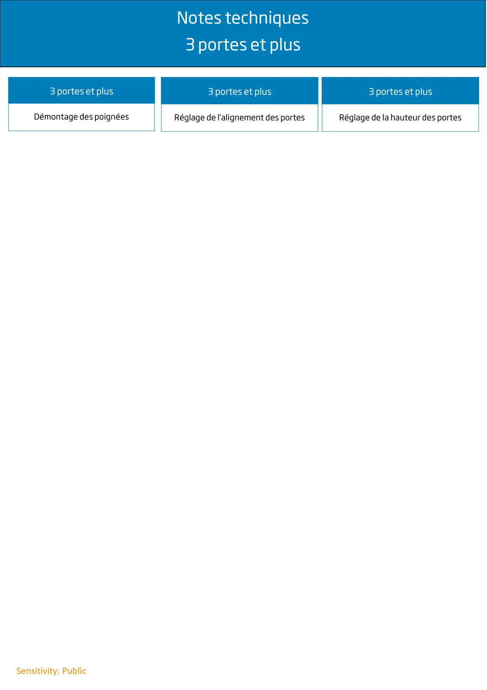

Infos techniques 3 portes et +

Notes techniques3 portes et plusSensitivity: Public3 portes et plusDémontage des poignées3 portes et plusRéglage de l’alignement des portes3 portes et plusRéglage de la hauteur des portes
1 / 1


Gros électroménager
Ressources techniques SAV — Beko · Grundig · Whirlpool · Hotpoint · Indesit.
